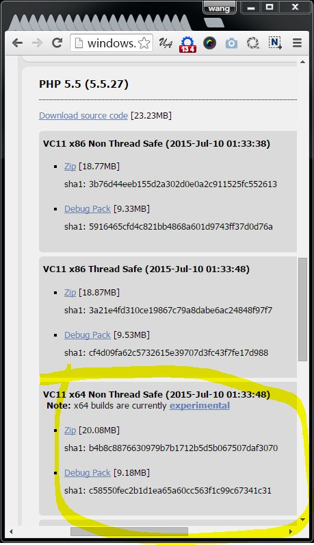
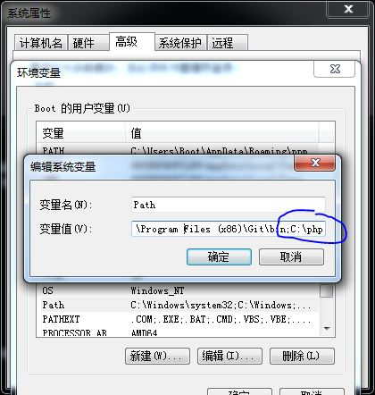
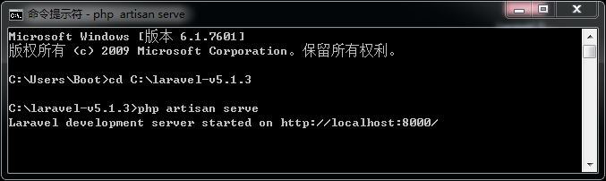
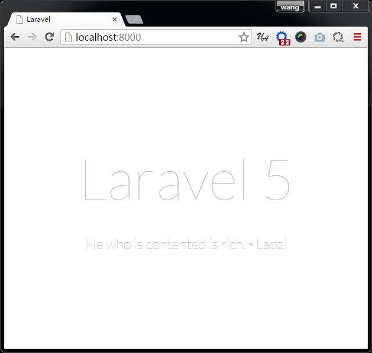

安装 PHP
注意一：Laravel 5.0 开始对 PHP 版本的要求是
>=5.4，Laravel 5.1 要求 PHP 版本>=5.5.9，所以，建议大家尽量安装 5.5.x 的最新版本，写此文章时，最新版本是5.5.27。注意二：PHP 5.4 是最后一个支持 Windows XP 和 Windows 2003 的版本了，所以，建议大家远离 XP 吧。参见：http://windows.php.net/
下载并设置 PHP
进入 http://windows.php.net/download/ 下载 PHP 5.5.x 的最新版本。如果你用的是 x64 系统，建议下载支持 x64 的版本。
thread safe和non thread safe代表的是是否支持线程安全，我们选择non thread safe。
将下载的 PHP 安装包解压到任意目录，在此建议解压到 C 盘根目录下，最终 PHP 的安装路径将是
C:\php。将 PHP 的安装路径加入
PATH环境变量。因为我们这次要使用的是 PHP 的命令行工具，所以这个设置很重要。
进入 PHP 安装目录（例如
C:\php）。找到php.ini-development文件并复制一份到当前目录，重命名为php.ini。- 用编辑器打开
php.ini文件，修改以下配置：
去掉extension=php_mbstring.dll前面的分号（888 行左右）
去掉extension=php_openssl.dll前面的分号（893 行左右）
去掉extension_dir = "ext"前面的分号（736 行左右）
下载 Laravel 5.1
Lravel 中文网提供了针对 Laravel 4.x 和 5.x 所有版本的一键安装包（Lumen 也提供了！），进入下载页面下载 Laravel v5.1.x 的最新版本即可（写这篇文章时是 v5.1.3）：
http://www.golaravel.com/download/
让 Laravel 跑起来吧
- 将下载下来的 Laravel 一键安装包解压到任意目录下面，我们假定解压到 C 盘的根目录下，最终路径为：
C:\laravel-v5.1.3。 - 打开一个新的命令提示符窗口，并
cd到 Laravel 安装目录：cd c:\laravel-v5.1.3 输入并执行
php artisan serve指令，可以看到如下提示：
说明 Laravel 已经跑起来了！
打开浏览器，在地址栏输入
localhost:8000，回车看看是否出现了熟悉的画面 :)
这是怎么回事？
其实从 PHP 5.4 版本开始，PHP 就已经内置（built in）了一个 web server，并且，Laravel 的 artisan 命令也支持这个内置web server，这让新手快速入门并上手 Laravel 变得更简单了。当然，如果要部署到生产服务器上的话，还是要安装 apache 或 nginx 之类的 web server 的。
artisan 的 serve 命令还支持两个参数：
host设置主机地址port设置 web server 监听的端口号
例如：php artisan serve --port=8888